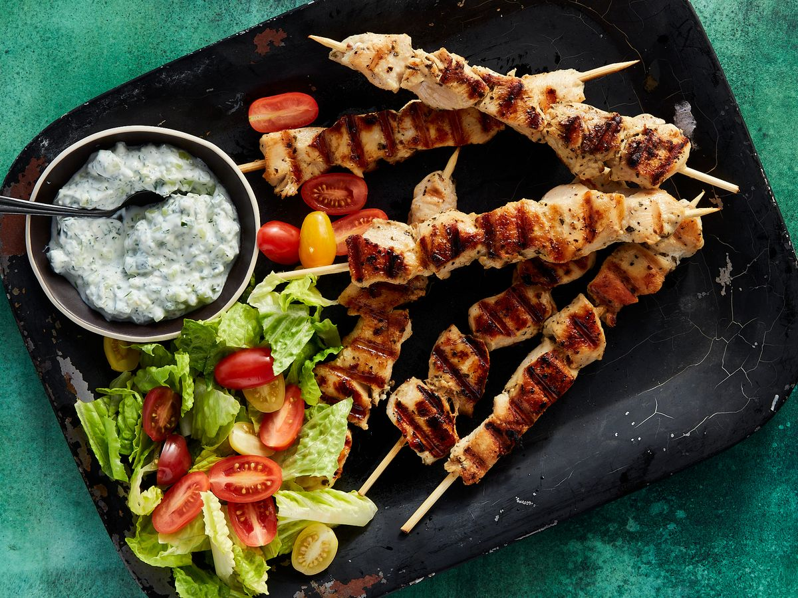

Souvlaki Recipe

Description
Souvlaki is a greek specialty made of grilled meat.
It’s traditionally made with pork, but it’s also commonly made with chicken, beef or lamb.
Pairs perfectly with pita bread, tzatziki sauce and rice.
Ingredients
- Pork meat
- Vegetables
- Soy sauce
- Oil
- Lemon juice
- Seasonings
- Skewers
Steps
- Make the marinade.
- Marinate the ingredients in the fridge for two to three hours.
- Thread the marinated ingredients onto skewers.
- Grill until the pork is no longer pink in the center.